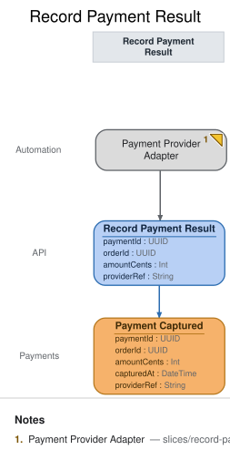

Record Payment Result
Translation · implemented
{kind=link}
| Kind | Name | Detail |
|---|---|---|
| translation | Payment Provider Adapter | |
| command | Record Payment Result | { paymentId: UUID, orderId: UUID, amountCents: Int, capturedAt: DateTime, providerRef: String } |
| event | Payment Captured | @Payments · { paymentId: UUID, orderId: UUID, amountCents: Int, capturedAt: DateTime, providerRef: String } |
Slice: Record Payment Result

Intent
The payment provider tells Meridian Goods, out of band, that a payment succeeded — via a webhook
call the provider makes on its own schedule. This slice is the anti-corruption seam between the
provider's wire format and our domain: it translates that external notification into our own
Record Payment Result command, so the rest of the system only ever deals with our vocabulary
(Payment Captured), never the provider's payload shape.
Trigger & Actor
Externally triggered, no durable artifact: the provider's webhook call is the Payment Provider Adapter translation's input directly — there is no persisted inbound queue behind it in this
model (no from, no slice before this one). The adapter maps the provider's payload to our
command at the boundary and issues it; it never records an event itself.
Command / Input
Command: Record Payment Result
| Field | Type | Required | Rules / Validation |
|---|---|---|---|
| paymentId | UUID | yes | Must name a paymentId already recorded by a Payment Requested event — see INV-RPR-3; the adapter maps this from whatever correlation identifier the provider's payload carries for our original request. |
| orderId | UUID | yes | Mapped from the provider payload; must match the orderId already associated with paymentId via Payment Requested. |
| amountCents | Int | yes | Mapped from the provider's captured-amount field; the command carries our own integer-cents representation, not the provider's native format (which may be a decimal string or a different currency-minor-unit convention). |
| capturedAt | DateTime | yes | Mapped from the provider payload's capture-time field — the provider's authoritative clock, crossing the INV-RPR-1 seam as a typed field like everything else. |
| providerRef | String | yes | The provider's own identifier for this capture event (e.g. their charge/transaction id). This is the idempotency key for INV-RPR-1 — a retried webhook for the same underlying capture carries the same providerRef. |
Trigger
Triggered by: translation Payment Provider Adapter, also in this slice.
Event(s) Emitted
Event: Payment Captured → context Payments
Read by: Open Orders (staff-facing, in the Open Orders slice) and Order Status
(customer-facing, in the Order Status slice).
| Field | Type | Immutable Fact? | Source / Notes |
|---|---|---|---|
| paymentId | UUID | yes | Record Payment Result.paymentId |
| orderId | UUID | yes | Record Payment Result.orderId |
| amountCents | Int | yes | Record Payment Result.amountCents |
| capturedAt | DateTime | yes | Carried in the provider's webhook payload — the provider's capture time, mapped onto Record Payment Result.capturedAt at the anti-corruption boundary (INV-RPR-1). Not a server echo; the provider is the authoritative source of when capture happened (see domain-decisions.md, timestamp-origin convention). |
| providerRef | String | yes | Record Payment Result.providerRef — kept on the event (not just the command) so downstream reconciliation against the provider's own records never has to re-derive it. |
Invariants / Business Rules
- INV-RPR-1 (anti-corruption seam): The provider's raw webhook payload never enters the
domain event. The
Payment Provider Adaptermaps the provider's wire shape (whatever fields, encodings, and vocabulary the provider uses) onto the fixedRecord Payment Resultcommand fields at the boundary;Payment Capturedonly ever carries our own typed, named fields (paymentId,orderId,amountCents,capturedAt,providerRef). If the provider changes its payload shape, only the adapter's mapping changes — the command, the event, and every downstream reader are unaffected. - INV-RPR-2 (idempotent under retries): Payment providers redeliver webhooks (at-least-once
delivery is standard practice for this class of integration). A retried webhook carrying the
same
providerRefas one already processed must never produce a secondPayment Capturedevent — the adapter (or the command handler it calls) treats a repeatproviderRefas a no-op, not a new fact. This is what makes the boundary safe to expose to a provider that retries on timeout, not just on genuine failure. - INV-RPR-3 (unknown paymentId is a rejection, not a fact): If the webhook's mapped
paymentIddoes not correspond to anyPayment Requestedevent Meridian Goods has recorded,Record Payment Resultis rejected — noPayment Capturedevent is recorded. A capture result for a payment we never requested is not a fact about our system; recording it anyway would let an external actor (or a misconfigured/malicious webhook) inject state we never asked for.
Scenarios (Given / When / Then)
- Happy path — Given
Payment Requestedexists forpaymentIdP1/orderIdO1, When the provider's webhook reports a capture forP1(amountCents5000, providerRefch_abc123), Then the adapter maps it toRecord Payment ResultandPayment Capturedis recorded forP1withproviderRefch_abc123. - Idempotent retry (INV-RPR-2) — Given
Payment CapturedforP1has already been recorded withproviderRefch_abc123, When the provider redelivers the identical webhook (sameproviderRef) after a timeout on its side, Then no secondPayment Capturedevent is recorded — the retry is a no-op. - Distinct providerRef is a distinct fact — Given
Payment CapturedforP1already exists withproviderRefch_abc123, When a different webhook arrives forP1carrying a differentproviderRef(e.g. a genuinely separate capture attempt the provider assigns a new id to), Then this is treated as a new event only if the domain actually allows a second capture for the same payment — in this model it does not (a payment is captured once), so this case is rejected the same way an unknown-context duplicate would be; theproviderRefdistinguishes retries from new facts, it does not by itself authorize multiple captures per payment. - Rejected — unknown paymentId (INV-RPR-3) — Given no
Payment Requestedevent exists forpaymentIdP9, When a webhook reports a capture forP9, ThenRecord Payment Resultis rejected and noPayment Capturedevent is recorded.
Alternate & Error Flows
- Webhook retries: covered by INV-RPR-2 — same
providerRefin, no duplicate event out. - Unknown paymentId: covered by INV-RPR-3 — rejected at the command boundary, surfaced back to the provider integration as a failure response (e.g. so it can alert rather than silently retrying forever against a payment id that will never resolve).
- Malformed/partial provider payload: a payload missing fields the adapter needs to populate the command is rejected at the translation boundary before it ever becomes a command attempt — this is the adapter's own input validation, upstream of the command's own required-field checks.
Non-Functional Requirements
- Security / authz: the webhook endpoint must authenticate the caller as the actual payment provider (e.g. signature verification on the raw payload) before the adapter maps and acts on it — modeled here as a precondition of the translation running at all, not as a command field.
- PII & compliance: the provider payload may carry more than what's mapped through (card metadata, customer contact fields); INV-RPR-1 is also what keeps that data from ever reaching our event store — only the four mapped/derived fields cross the seam.
- Performance / SLA: none modeled — webhook processing is expected to complete well within the provider's own retry/timeout window, which is what makes INV-RPR-2 exercise in practice rather than in theory.
Dependencies & Read Models Affected
- Upstream events this slice relies on:
Payment Requested(owned by theRequest Paymentslice) — referenced only to validatepaymentId(INV-RPR-3), not consumed as aviewsource (this translation has no durable artifact / nofrom). - Downstream read models / slices affected:
Open Orders,Order Status(both readPayment Captured).
Open Questions
- Should a rejected webhook (unknown paymentId) be persisted anywhere for audit/debugging?
Resolved: out of scope for this model revision — no inbound-queue durable artifact exists for
this translation (see the no-durable-artifact form in
reference/methodology.md§Translation); logging/alerting on rejection is an implementation concern, not a modeled read model. - Does a provider decline (as opposed to a capture) need its own event? Resolved: not modeled
in this revision — this slice only translates successful captures; a decline/failure notification
would need its own event and command, left as a known future extension (see also the matching
open question in
slices/request-payment.md).